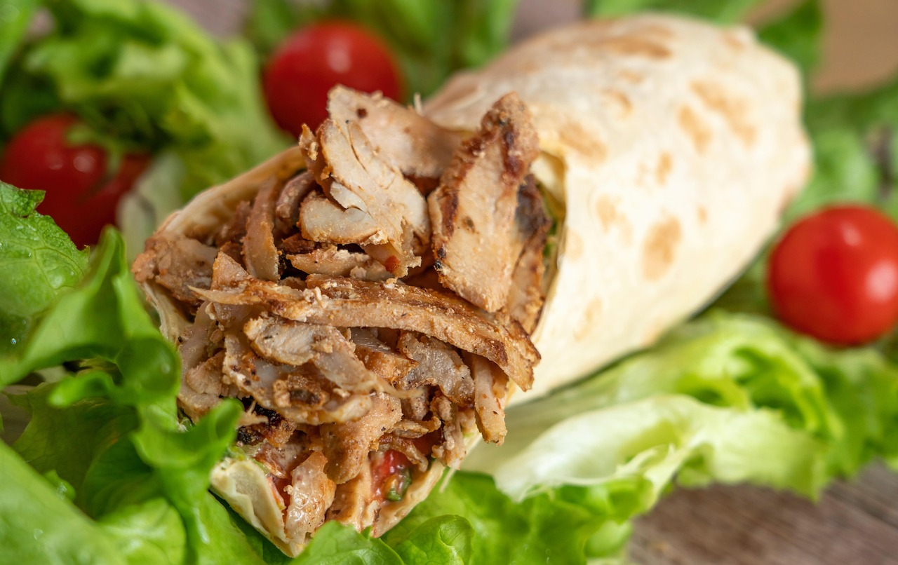
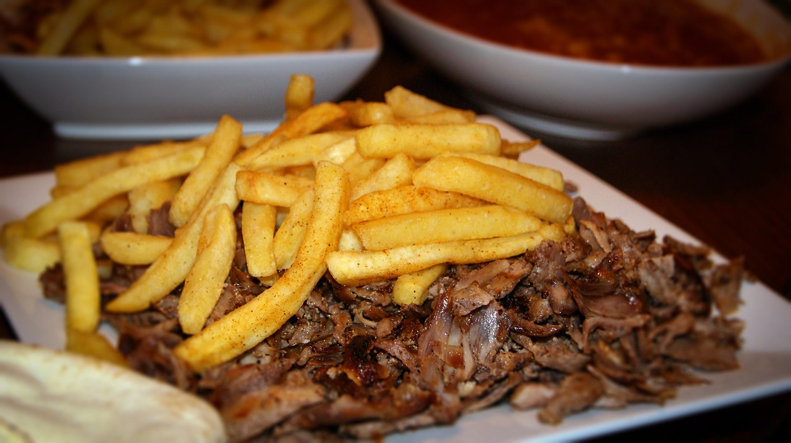
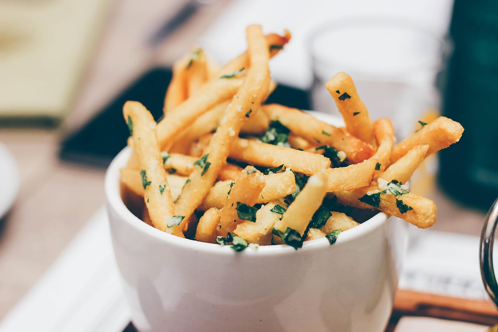

Shaorma
Preparate rapide de tip fast-food, mereu proaspete
Shaorma gustoasă, non-stop în Obor
Preparate rapide de tip fast-food, mereu proaspete.
Deschis non-stop, în fiecare zi

La Turcu e locul unde poți veni oricând pentru o shaorma gustoasă, servită rapid. Suntem deschiși non-stop și te așteptăm cu preparate proaspete, pe gustul tuturor. Oferim livrare rapidă prin Glovo.
Non-stop, pentru orice poftă
Primești rapid preparatele acasă
Shaorma, servită rapid
Alege ce ți-e poftă.
Preparate rapide de tip fast-food, mereu proaspete
Fotografii ilustrative.




Comandă rapid prin aplicația Glovo.
Livrare prin Glovo